Nossas culturas e
Outro dia ouvi uma pessoa dizer que “Maria não tinha cultura”, era “ignorante dos fatos
básicos da política, economia e literatura”. [...]
[...] usa-se cultura como sinônimo de sofisticação, de sabedoria, de educação no sentido restrito do termo. Quer dizer, quando falamos que “Maria não tem cultura!” e que
“João é culto”, estamos nos referindo a certo estado educacional dessas pessoas, querendo
indicar com isso sua capacidade de compreender ou organizar certos dados e situações.
Cultura aqui é equivalente a volume de leituras, a controle de informações, a
títulos universitários e chega até mesmo a ser confundida com inteligência, como se a habilidade
para realizar certas operações mentais e lógicas (que definem de fato a inteligência), fosse
algo a ser medido ou arbitrado pelo número de livros que uma pessoa leu, as línguas que
pode falar, ou aos quadros e pintores que pode, de memória, enumerar. [...]
DAMATTA, R. Você tem cultura? In: DAMATTA, R. Explorações: ensaios de sociologia interpretativa. Rio de Janeiro: Rocco Digital, 2012. E-book.
O texto acima aborda um exemplo de como o senso comum define a ideia, ou conceito, de
cultura: como se fosse algo que alguém pode ter ou não. Quando utilizamos essa forma de
definição, estamos nos referindo ao acesso que as pessoas tiveram a determinadas informações,
consideradas mais “sofisticadas”. Trata-se, portanto, do tipo de educação formal que as
pessoas receberam durante a vida – ou, colocando a questão de outra forma, se elas “têm educação”. A avaliação que alguns fazem sobre as pessoas que são consideradas “sem cultura”
se baseia na falta de acesso à educação formal, concluindo-se equivocadamente, com base
nisso, que essas pessoas são menos capazes de compreender a realidade.
Dessa perspectiva, cultura se torna um termo para classificar indivíduos, pessoas com as
mesmas afinidades e até grupos inteiros, de forma generalizante. Um exemplo seria uma
pessoa nascida em determinada região do Brasil se referir a outro grupo de brasileiros como pessoas
que “não têm cultura” ou que “são analfabetos”. Nesse sentido, então, a ideia de cultura, no
senso comum, estaria sendo usada para discriminar indivíduos e grupos, servindo como forma
de julgamento e revelando preconceitos. Mas será que a palavra cultura pode ser usada
somente nesse sentido? Vamos responder a essa pergunta conhecendo outras formas de definir
o conceito de cultura.
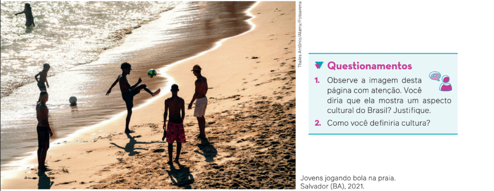
Natureza e cultura
Cultura é um termo de origem latina que tem ligação com o verbo “cultivar”, no sentido
de ser um meio de buscar o crescimento – daí, por exemplo, a palavra agricultura. A ideia de
“buscar o crescimento” em termos de formação intelectual e moral, idealizada como forma
de elevação do ser humano, tornou-se mais frequente a partir da difusão dos ideais iluministas, na Europa do século XVIII.
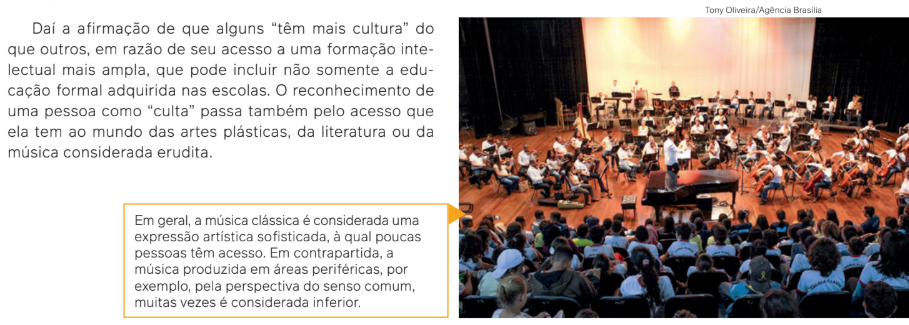
Apresentação da Orquestra Sinfônica do Teatro Nacional Cláudio Santoro. Brasília (DF), 2022.
Voltando mais ainda no tempo histórico, podemos dizer que o ato de transformar a natureza pode ser entendido como a primeira definição de cultura. Afinal, os seres humanos
são diferentes dos outros seres vivos, pois seriam “inventores do mundo”. Isso significa
que eles são os únicos que não se submetem totalmente à natureza, e sim a transformam.
Cultura, nessa perspectiva, pode ser definida por oposição à natureza. Trata-se da intervenção do ser humano – utilizando a capacidade intelectual e a criatividade – no mundo natural ao seu redor.
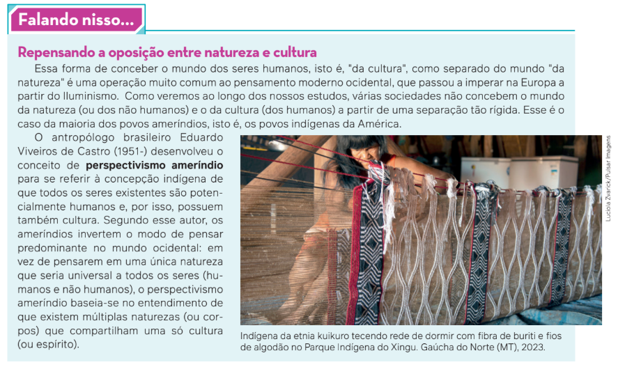
Cultura como representação da realidade
O longo processo de adaptação do meio ambiente original para um ambiente que podemos
chamar de “cultural”, em razão da intervenção humana, teve início há cerca de quinze milhões
de anos. Desde então, segundo o antropólogo francês Denys Cuche (1947-), a cultura permitiu
ao ser humano, além de se adaptar ao meio, adaptar o meio aos seus projetos e necessidades.
Nosso mundo, portanto, é resultado da cultura.
Assim, o ser humano, nessa concepção do pensamento ocidental, não vive de acordo com
seus instintos, e sim conforme sua capacidade de pensar a realidade que o cerca e de construir significados. Essas são realizações culturais, que se transformam em símbolos. A título
de exemplo, vamos imaginar como seria uma necessidade básica de homens e mulheres com
a mediação da cultura: a alimentação.
As pessoas costumam comer qualquer coisa, ainda que seja considerada nutritiva? Na
sociedade brasileira, por exemplo, as formigas são consideradas alimento? Por que em
determinadas sociedades ingere-se carne de porco e em outras há restrições a esse consumo?
Apesar de carne de porco e formigas poderem ser consideradas alimentos, pelo fato de
serem comprovadamente nutritivas pela ciência, algumas sociedades não as consideram
comestíveis. Por quê? Porque cada alimento tem um significado cultural para determinada
sociedade, incluindo a forma como se come. Por exemplo: enquanto no Brasil é comum misturar
vários alimentos no mesmo prato, na Itália a maioria dos habitantes separa os alimentos na
hora do almoço e do jantar: primeiro as verduras, depois uma massa e em seguida uma carne.
Em uma de suas obras, o sociólogo alemão Norbert Elias (1897-1990) relata que, na Idade
Média europeia, os franceses comiam com as mãos um cabrito inteiro sobre a mesa, arrotavam
e cuspiam os ossos no chão. Séculos depois, esse hábito alimentar mudou. Os franceses passaram a utilizar talheres, e desapareceram certos hábitos, como o de levar à mesa um animal
inteiro e de arrotar.
O hábito de se alimentar, portanto, não é igual
para todas as sociedades, pois depende dos costumes e dos significados atribuídos às ações de
seus membros. Essa é outra forma de definir cultura, ou seja, como representação da realidade
ou da ação dos indivíduos.
Um gesto simples como o beijo pode ilustrar
isso. Quando um brasileiro do sexo masculino e
heterossexual encontra um conterrâneo amigo
(também do sexo masculino e heterossexual),
ambos se abraçam ou dão um aperto de mão.
A troca de beijos no rosto entre homens brasileiros é mais comum entre pais e filhos. Os italianos
beijam-se no rosto, porém é usual os amigos russos se beijarem nos lábios. Assim, nas diferentes
sociedades há diversas formas de representar um
gesto de amizade, e um ato desse tipo tem seu
significado. O ato de beijar na boca entre os homens no
Brasil tem o significado de uma relação
homoafetiva – entendimento que não existe, necessariamente, na Rússia.
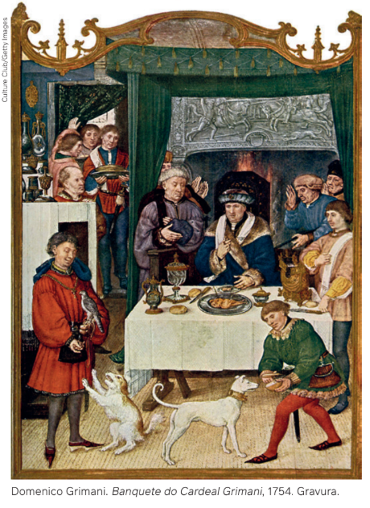
A representação da realidade acontece
muitas vezes por meio dos símbolos. O termo
símbolo tem origem no grego (sýmbolon) e designa
um elemento representativo que está no lugar
de algo que tanto pode ser um objeto como um
conceito ou ideia. O símbolo é um elemento
essencial na comunicação e nas culturas e difundido
no cotidiano. Alguns são reconhecidos
internacionalmente, e outros só em determinado grupo ou
A representação de cada símbolo pode aparecer como resultado natural das relações
sociais ou pode ser de comum acordo. Poderíamos citar vários exemplos de símbolo, tais como
a cruz para a Igreja Católica, que representa a crucificação de Jesus Cristo; ou a aliança de
casamento, que representa a união de um casal.
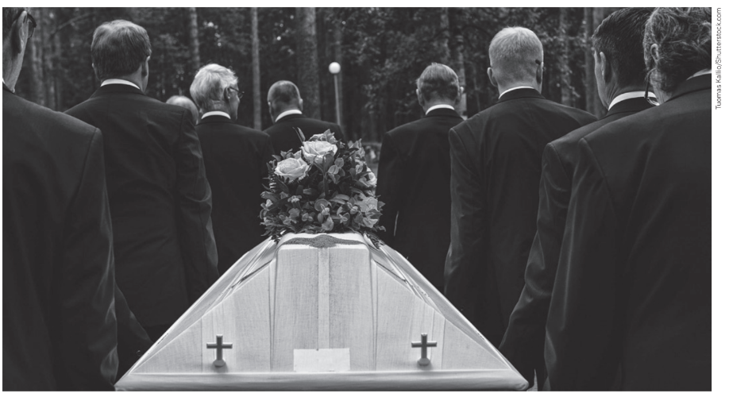
O preto é um símbolo que costuma ser utilizado para representar o luto vivido com a morte de uma pessoa.
O símbolo, então, representa algo para alguém e é um dos elementos centrais das culturas. Por meio dos símbolos, os indivíduos representam a realidade em que vivem e formam a cultura, inventam e cultivam maneiras de se relacionar uns com os outros e elaboram visões de mundo. A cultura como forma de representar a realidade existe em todos os lugares e indivíduos, não havendo, portanto, pessoas que têm e pessoas que não têm cultura. Todos nós temos uma cultura, que se expressa em símbolos – as formas de se vestir, de falar, as formas religiosas, as formas artísticas, e muitas outras formas.
Cultura e os estudos antropológicos”
Para a Antropologia, cultura é um conjunto de regras que permite aos seres humanos ler
e interpretar o mundo ao seu redor. A Antropologia é o estudo das culturas humanas em suas
diversidades históricas e geográficas.
De forma semelhante à Sociologia, a Antropologia é uma Ciência Social que nasceu no
século XIX, como um projeto de ciência que consistia em reconhecer, conhecer e compreender a
diversidade das manifestações culturais dos povos no tempo e no espaço.
A Antropologia permitiu aos europeus descobrir que aquilo que pensavam ser natural era,
na verdade, cultural. Assim, o menor dos comportamentos (gestos, mímicas, posturas, reações
afetivas) nada tem de natural, como vimos no exemplo do beijo e dos hábitos alimentares.
Trata-se do reconhecimento de que o “outro” é simplesmente diferente do “nós” – o que,
na Antropologia, é chamado alteridade. Para a Antropologia, o conhecimento de nossa cultura
passa inevitavelmente pelo conhecimento de outras; e devemos reconhecer que somos uma
cultura possível entre tantas outras, não a única.
O que podemos dizer sobre quaisquer indivíduo e sociedade é a aptidão quase infinita para
inventar modos de vida e de organização social extremamente diversos. As formas de andar,
dormir, interagir, se emocionar, comemorar e tantas mais existem em todas as sociedades, mas
os modos como essas manifestações ocorrem dependem da cultura de cada uma.
Na Antropologia, o conceito de cultura já passou por várias mudanças ao longo dos anos. Já se afirmou tratarse de um complexo de conhecimentos; que cada cultura é única; que é um meio de adaptação do ser humano à
natureza; que vai além da herança genética; que é um meio para o funcionamento da sociedade; que é um sistema
simbólico; entre outras possibilidades.
A primeira definição formal de cultura é atribuída ao britânico Edward Tylor (1832-1917) em 1871. Para Tylor, cultura é todo o contexto que inclui costumes, crenças, artes, conhecimentos, moral, leis e quaisquer outros hábitos
adquiridos pelos seres humanos como membros de uma sociedade.
Outro antropólogo que estudou o tema foi o alemão naturalizado estadunidense Franz Boas (1858-1942). Para
Boas, cada cultura tem história, dinâmica e consistência próprias e origina-se da interação com o meio ambiente e
com outras culturas. Boas acreditava que, para investigar ou interpretar uma cultura, era necessário buscar a
história de um povo ou sociedade – processo denominado particularismo histórico na Antropologia.
As pesquisas de campo desenvolvidas por Boas foram consideradas pioneiras em razão de seu método
etnográfico, em que defendia que qualquer detalhe deve ser descrito da forma mais meticulosa possível. Uma das
conclusões dos estudos de Boas é que cada sociedade deve ser entendida “por si mesma”, de forma autônoma do
ponto de vista cultural.
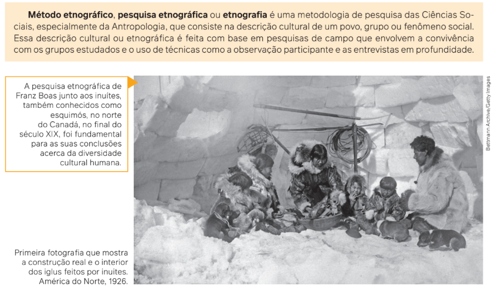
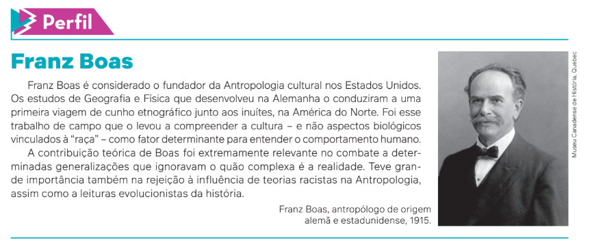
O polonês Bronislaw Kasper Malinowski (1884-1942) se formou em Física, mas tinha
interesse em estudar povos não europeus. Em 1914, participou de uma expedição às Ilhas Trobriand (em Papua Nova Guiné, na Oceania) e ficou por lá cerca de três anos. Observando os
costumes dos trobriandeses, Malinowski não os considerou “atrasados” ou “primitivos”,
embora fossem muito diferentes dos europeus; para ele, a cultura dos nativos da ilha tinha
significados e coerência.
Essa estadia nas ilhas estimulou Malinowski a formular a teoria de que os indivíduos têm
necessidades básicas que as culturas podem satisfazer de formas diferentes umas das outras.
Cada cultura realiza isso elaborando instituições (religiosas, econômicas, políticas e educativas) e fornecendo respostas organizadas que constituem, cada uma à sua maneira, soluções
originais que permitem atender a essas necessidades.
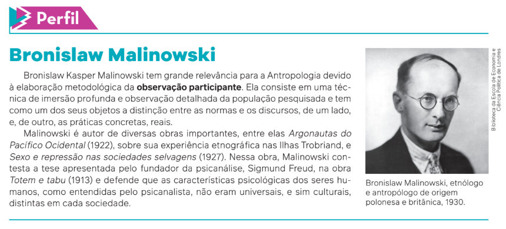
Já o belga-francês Claude Lévi-Strauss é considerado o antropólogo mais influente do século XX, com dezenas de publicações. Para Lévi-Strauss, culturas
devem ser entendidas como uma estrutura de sistemas simbólicos presente em
todas as sociedades. Em outras palavras, a enorme variedade de culturas só poderia ser entendida se algumas estruturas comuns a todas elas fossem identificadas,
tais como as relações de parentesco, a linguagem e a economia.
Lévi-Strauss faz uma
analogia com o jogo de cartas para
desenvolver essa ideia. Segundo ele, o ser humano é como
um jogador de cartas que, ao
sentar-se à mesa para jogar,
sabe que aquele jogo não foi
invenção sua, e sim um dado
da história humana.
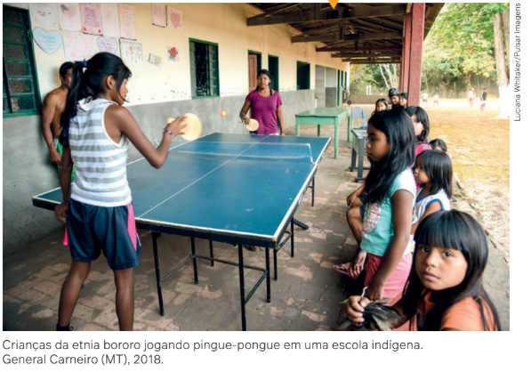
Quando os jogadores dão as cartas, cada jogador, assim como cada sociedade, interpreta os movimentos de acordo com um sistema de pensamento, sendo de conhecimento de todos que as cartas e o jogo (estruturas, sistemas simbólicos) podem ser usados por diferentes jogadores e com regras diferentes (culturas distintas).
O antropólogo francês Lévi- -Strauss realizou pesquisa junto aos indígenas da etnia bororo, no estado de Mato Grosso, na década de 1930.
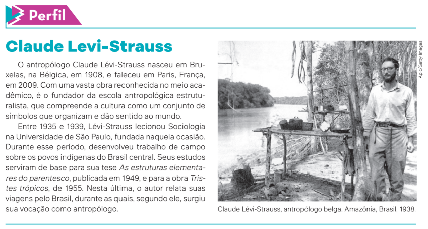
Outro antropólogo estadunidense, Clifford Geertz (1926-2006), também considera as
culturas sistemas simbólicos, porém não busca o entendimento de que exista somente uma forma
universal de ser humano. Geertz considera que a cultura é um conjunto de mecanismos de
controle, regras, planos, instruções, receitas (que na linguagem da informática denominam-se
programas) que governam o comportamento humano. Leia o trecho a seguir de Geertz sobre
esses mecanismos ou padrões culturais:
[...] Não dirigido por padrões culturais – sistemas organizados de símbolos significan- tes – o comportamento do homem seria virtualmente ingovernável, um simples caos de atos sem sentido e de explosões emocionais, e sua experiência não teria praticamente qualquer forma. A cultura, a totalidade acumulada de tais padrões, não é apenas um or- namento da existência humana, mas uma condição essencial para ela – a principal base de sua especificidade.
GEERTZ, C. A interpretação das culturas. Rio de Janeiro: LTC, 2008. p. 33..
Para Geertz, portanto, estudar a cultura é procurar e identificar um determinado código de
símbolos; é assumir a tarefa de interpretar as culturas como teias de significados, pois todos os
atos humanos são simbólicos e se relacionam entre si. Geertz estabelece uma analogia dessa
procura pelo sentido dos atos humanos com um simples exemplo: dois garotos piscando
rapidamente um olho, mas um deles o faz como um tique nervoso, e o outro, como uma “piscadela”. A diferença entre um e outro é grande: o tique nervoso pode ser um sintoma orgânico, mas
a “piscadela” é um gesto, uma “partícula” de comportamento, um sinal de cultura relacionado
com outros sinais, que deve ser interpretado.
Por fim, cabe mencionar o antropólogo brasileiro Roberto DaMatta (1936-), que elaborou
uma síntese de algumas dessas definições. Segundo ele, cultura é um conjunto de códigos,
mapas e receitas em que os indivíduos pensam, estudam, modificam e classificam a realidade e as próprias relações. Em outras palavras, a cultura é o “cimento” que dá unidade a certo
grupo de pessoas que compartilham os mesmos costumes e valores. Desse ponto de vista,
portanto, tudo o que faz parte do mundo humano é cultura.
Concretamente, portanto, podemos falar de culturas em vez de cultura, no singular. Assim,
referimo-nos às culturas indígenas, com seus modos de vestir, dormir, caminhar, se relacionar,
entre outros, às culturas chinesas, japonesas, francesas, ciganas, negras, nordestinas... Quando
identificamos e estudamos traços de comportamento, personalidades, simbologias compar-
tilhadas, atitudes comuns em determinados grupos, comunidades ou nações, podemos dizer
que há culturas específicas dos indivíduos que compõem grupos, comunidades ou nações.
Definir cultura é compreender também as variadas formas que governam os grupos humanos em termos de
suas relações de poder, diferentes modos de organizar a sociedade, de se apropriar dos recursos naturais, de in-
ventar, significar e expressar a realidade humana.
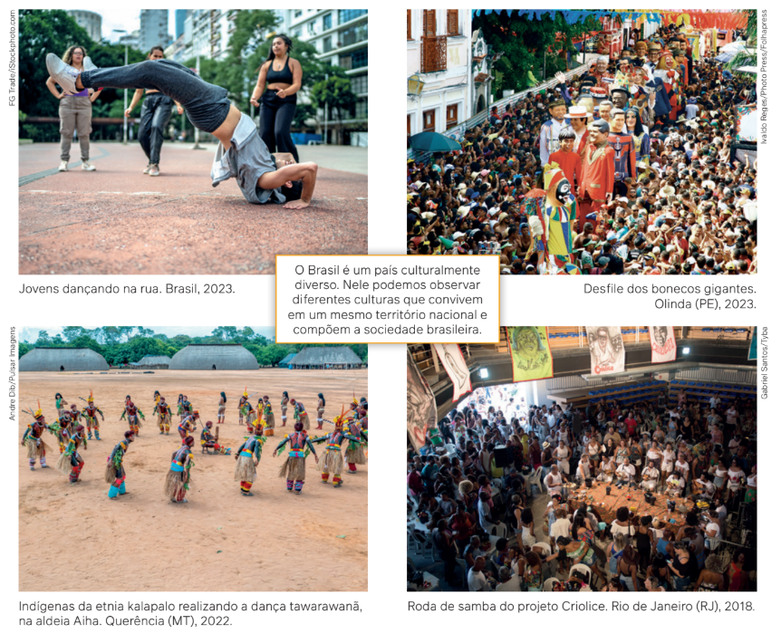
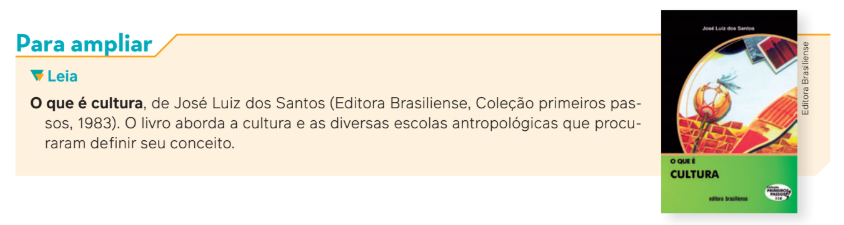
Estudamos até aqui diferentes definições de cultura e podemos ressaltar alguns pontos:
• A cultura é produzida pelo ser humano em qualquer local.
• A cultura permitiu ao ser humano que se adaptasse ao meio, aos outros seres humanos e às suas necessidades.
• A cultura estabelece regras que orientam como o mundo pode e deve ser classificado.
• A cultura molda o comportamento humano e pode servir como justificativa para todas as ações humanas.
• A cultura dá unidade a grupos de pessoas que compartilham costumes e valores.
• Por fim, devemos sempre falar em culturas, no plural.
O impacto da teoria da evolução das espécies na
interpretação da diversidade cultural humana
As origens da Antropologia, assim como o desenvolvimento de outras ciências, estão
atreladas aos processos coloniais e imperialistas europeus do século XIX, contexto no qual
se ampliou e sistematizou a produção de conhecimento sobre as diferentes populações de
outros continentes, que já vinha ocorrendo desde o final do século XV. Como vimos até agora, a Antropologia
dedica-se à compreensão da diversidade das culturas, suas distintas razões e suas diferentes manifestações.
Antes do surgimento dessa perspectiva culturalista e do desenvolvimento de métodos e técnicas específicos
para o estudo das diferentes sociedades e suas culturas, as análises sobre as novas sociedades com que os
europeus se deparavam ao redor do mundo eram baseadas em teorias e metodologias elaboradas por outros
campos do conhecimento como as Ciências Naturais e a Filosofia. A teoria da evolução das espécies de
Charles Darwin (1809-1882) é um exemplo de conhecimento produzido no campo das Ciências Biológicas e
que foi aplicado para interpretar as sociedades humanas.
Em 1859, o naturalista britânico Charles Darwin revolucionou as Ciências Biológicas ao demonstrar
cientificamente que as espécies do mundo natural, incluindo os seres humanos, evoluíram biologicamente a partir
do mecanismo de seleção natural.
Seleção natural: mecanismo evolutivo que faz com que organismos ge- neticamente mais bem adaptados a um ambiente sobrevivam e se repro- duzam com mais sucesso em relação a outros de uma mesma população.
Na década de 1870, alguns estudiosos do mundo social, como o filósofo inglês Herbert Spencer (1820-1903),
impactados pela teoria de Darwin, passaram a defender que as leis da evolução do mundo biológico poderiam
ser aplicadas para entender as sociedades humanas. Spencer defendia a existência de estágios de
desenvolvimento “sucessivos, únicos e obrigatórios”, pelos quais passariam todos os grupos humanos, em direção a
estágios mais complexos de organização social, sendo o ápice do progresso e do desenvolvimento cultural, a
civilização ocidental europeia. Para esse estudioso, existiriam povos dotados de mais capacidades do que
outros, o que os levava a desenvolverem sociedades superiores e tecnicamente mais avançadas. Segundo seus
critérios, as sociedades brancas europeias corresponderiam ao ápice da evolução social, ao passo que os povos
indígenas, africanos e asiáticos ocupariam um lugar inferior na escala evolutiva das sociedades. Essa teoria ficou
conhecida como darwinismo social. O avanço das pesquisas nas áreas da Biologia e da Antropologia
demonstrou que essa interpretação da teoria de Darwin não tem fundamento científico e foi formulada com base em
concepções errôneas sobre a existência de diferenças evolutivas entre raças humanas. Ainda que errônea, essa
teoria ajudou a disseminar o ideal de superioridade das sociedades brancas europeias.
O darwinismo social, enquanto uma interpretação equivocada das teses de Darwin,
defendia o princípio de eliminação dos menos aptos e foi utilizado para justificar as
políticas eugenistas que defendiam a separação entre as raças, e, até mesmo, a exclusão de
grupos considerados “indesejados” ou “inferiores”.
As teorias do evolucionismo social foram contestadas por diversos antropólogos ao
longo do século XX, que não apenas buscaram demonstrar a existência de diversos tipos
definitivos e coexistentes de civilização, como também rejeitaram a ideia de uma linha
única e geral de desenvolvimento cultural. A antropologia cultural, tendo o antropólogo
alemão Franz Boas como um de seus maiores expoentes, contribuiu ainda para desmantelar as teorias racistas na ciência.
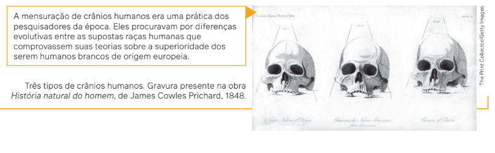
A diversidade cultural
Vimos várias formas de definir cultura. Entretanto, o maior interesse da Sociologia está
nas definições de cultura como representação da realidade humana e no seu sentido
antropológico, pois são essas as definições que permitem fazer uma interpretação sociológica das
distintas sociedades e contribuem para a compreensão dos processos de mudanças sociais.
A cultura como representação da realidade e no sentido antropológico faz lembrar que as
sociedades são pluriculturais: há várias culturas no interior de uma
mesma sociedade. A relação entre essas diversas culturas pode ser de aceitação, troca, tolerância ou conflito. O que vai
determinar a maneira como se dá a relação entre essas culturas distintas está relacionado com
a história de cada sociedade ou com a forma como determinada cultura dominante se impôs
(ou foi imposta) diante das demais culturas.
Vamos fazer uma analogia para entender melhor isso, por meio de duas narrativas culturais bem
conhecidas no Brasil.
A Torre de Babel, segundo a narrativa bíblica apresentada no livro do Gênesis, foi uma
torre que começou a ser construída pelos seres humanos com o objetivo de alcançar o céu.
Segundo a narrativa, Deus interpretou esse projeto como um ato de orgulho e desobediência
por parte da humanidade e decidiu agir para conter as ações imprevisíveis dos seres humanos
a partir dali.
Assim, como as pessoas falavam uma só língua, Deus confundiu a linguagem com a qual se
comunicavam, diferenciando a língua única que falavam, além de dispersá-las por diferentes
partes do mundo. Essa é apenas uma das várias narrativas de cunho mítico que tentam explicar a criação do mundo e dos seres humanos, bem como a existência das diversas línguas e
culturas. A narrativa da Torre de Babel é a explicação apresentada pela tradição judaico-cristã,
porém há várias outras, provenientes de diferentes povos ao redor do mundo.
Existe um provérbio nagô-iorubá – sociedade africana milenar localizada na Nigéria – que
afirma que “os dedos não são iguais”, mas, como pertencem à mesma mão, precisam viver
juntos, lado a lado. Esse provérbio pode ser interpretado, entre outras leituras possíveis, da
seguinte forma: apesar de suas diferenças, todos os seres humanos precisam se respeitar e
saber conviver entre si. É importante ressaltar que, nesse provérbio, não há conotação de
“desigualdade”, mas sim de “diferença” – apesar dos tamanhos diferentes de cada dedo.
Tanto o livro do Gênesis quanto o provérbio africano se relacionam com os estudos
desenvolvidos pela Antropologia voltados para a compreensão da diversidade das culturas, suas
diferentes razões e manifestações. Compreender que nossas sociedades são pluriculturais
é afirmar que a diversidade do gênero humano constitui
uma questão fundamental de
convivência e respeito entre
todas as culturas, apesar das
diferenças. Essa diversidade é
um dado da realidade humana.
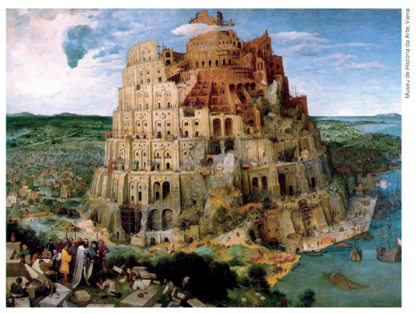
E, para nos situar no mundo, é necessário ter a consciência de que existe uma “Babel cultural”, ou seja, de que os dedos não são iguais, que as pessoas são diferentes e que encontram, com base nas suas culturas, formas diversas de lidar com a realidade e atender a suas necessidades.
Pieter Bruegel. A Torre de Babel,
1563. Óleo sobre madeira,
155 cm x 114 cm. Coleção do
imperador Rodolfo II.
Ser diferente é normal
Já vimos que a diversidade cultural é um dado da realidade humana, presente em qualquer lugar do planeta.
Agora, devemos ter a consciência dessa realidade para dar atenção a fatos que dizem respeito aos diversos interesses de grupos e pessoas.
Isso significa que, quando uma pessoa ou grupo considera normal ou natural uma situação ou ideia, muitas
vezes essa normalidade ou naturalidade se expressa como relação de poder, desigualdade ou opressão.
Para a Sociologia, falar em sociedade não significa descrevê-la simplesmente de forma homogênea. Quando
fazemos uma análise das sociedades, identificamos de imediato a existência de desigualdades sociais e diferenças
entre grupos e pessoas. As desigualdades são fabricadas pelas relações sociais, econômicas, culturais e políticas.
Geralmente, as classes ou camadas superiores das sociedades são as mesmas, tanto do ponto de vista
cultural como do político. As classes sociais ou camadas superiores das sociedades são as mesmas em termos de
manutenção do poder político e dos privilégios sociais e econômicos, reproduzindo sua dominação por meio da
cultura e da disseminação de certa visão de mundo. Não devemos, no entanto, confundir desigualdade social
com diferenças sociais e culturais dos indivíduos, grupos e sociedades.
As desigualdades sociais são definidas com base nas condições sociais e econômicas de determinados grupos.
Há grupos que detêm mais riquezas do que outros, bem como mais acesso a determinados serviços, o que gera uma
sociedade desigual, na qual poucos dispõem da maior parte da riqueza, enquanto muitos permanecem na pobreza.
A diferença social e cultural, por sua vez, significa que os indivíduos ou grupos são apenas diferentes, e não
superiores e inferiores. O indivíduo originário do continente africano é diferente do chinês ou do europeu; a mulher é diferente do homem; o adepto ao candomblé tem uma religião diferente da do evangélico; as pessoas com
deficiência são diferentes daquelas que não têm deficiências; e assim por diante. Essas características dos seres
humanos não significam superioridade ou inferioridade de uns sobre outros.
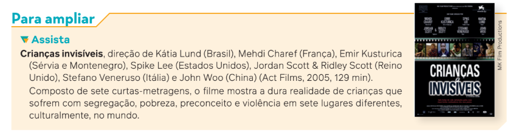
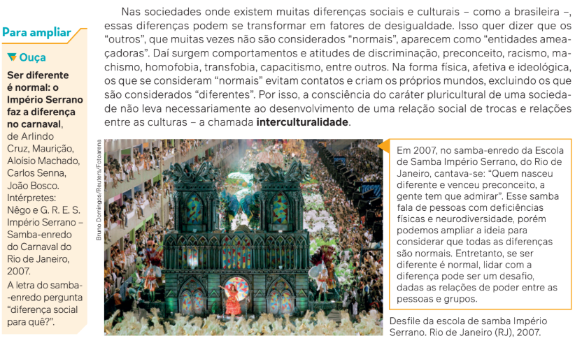
O etnocentrismo
Por que as diferenças sociais e culturais são, para muitas pessoas, sinônimo de desigualdade? No senso comum,
por exemplo, nordestinos são muitas vezes associados ao analfabetismo ou à ignorância, e pessoas negras e povos
indígenas são considerados marginais ou selvagens. Mulheres são consideradas “inferiores”. Pessoas
homossexuais ou transsexuais apresentariam “anomalias mentais” e “morais”.
Podemos dizer que essas ideias representam visões etnocêntricas de mundo. Mas o que significa o termo
“etnocentrismo”?
Etimologicamente, “etno” deriva do grego ethnos e se refere a etnia, raça, povo, clã. Assim, etnocentrismo significa considerar a própria etnia o centro ou o eixo de tudo, a base que serve de referência ou ponto de vista de onde se deve olhar e avaliar o mundo ao redor. O termo foi criado em 1906 pelo sociólogo estadunidense William Graham Sumner (1840-1910) e tem sido usado para explicar sociológica e antropologicamente preconceitos, discriminações, racismo, homofobia, sexismo e estereótipos sobre os variados grupos considerados diferentes em comparação a determinado padrão.
Estendendo essa definição, o etnocentrismo é uma tendência que considera apenas os valores da própria
cultura ao analisar as demais. Isso significa dizer que as visões de um determinado grupo política, econômica e
socialmente dominante em dada sociedade são consideradas a referência. Tudo – inclusive outros grupos e indivíduos
– é pensado e sentido por meio dos valores, modelos e definições do grupo dominante, que seria a própria
“representação” da existência humana.
Quando duas culturas se encontram, pode ocorrer um choque cultural: quando surge um grupo “diferente”, que
não age como o grupo dominante, ele é considerado estranho ou ameaçador, porque pode afetar de alguma forma
a identidade cultural do grupo dominante. Então, se pertencemos ao grupo que apresenta os padrões culturais
considerados “corretos” e “naturais”, se houver choque cultural, não será aceitável que o grupo diferente tenha
hábitos que julgamos “estranhos”.
Em poucas situações, a atitude etnocêntrica passa por um julgamento simples do valor da cultura do outro, nos
termos da cultura própria, sem consequências mais sérias. Mas a história é repleta de exemplos de violência causada
pelo etnocentrismo. Considerar um povo – como os indígenas ou os africanos – primitivo ou bárbaro pode significar,
social e politicamente, que há “algo a ser destruído” ou um empecilho ao “desenvolvimento econômico” das nações.
O etnocentrismo formula representações e imagens distorcidas sobre
aquele que entendemos como “diferente” de nós; essas representações
são sempre manipuláveis como bem
entendemos. Além disso, no fundo, o
etnocentrismo transforma a diferença
pura e simples em juízo de valor, perigosamente prejudicial à humanidade.
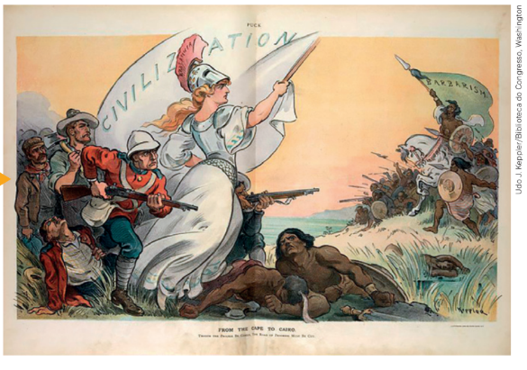
KEPPLER, U. J. [Charge Da Cidade do Cabo ao Cairo]. Revista Puck, Nova York, 1902.
A charge representa a Britânia (uma
figura feminina branca que simboliza
a Grã-Bretanha) dirigindo-se à África,
seguida de soldados britânicos e
colonialistas. Ela empunha a bandeira
da civilização enquanto os africanos,
a da barbárie. Esse é um exemplo
de como os europeus viam e
representavam os povos não europeus.
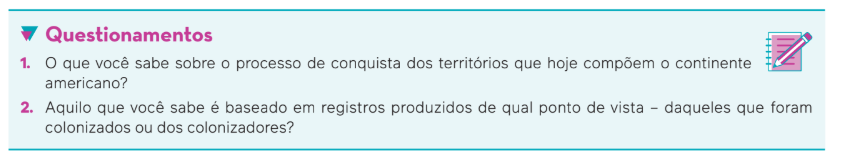
Esclarecido isso, podemos refletir sobre a nossa própria história: como sabemos, as sociedades ocidentais
americanas são herdeiras diretas da tradição europeia, branca e cristã, que foi trazida pelos colonizadores e que
predominou sobre outras culturas que existiam nas Américas.
Se pensarmos em termos de história do Brasil, podemos verificar que nossa formação nacional foi marcada pela
eliminação física do “diferente” (indígenas) ou por sua escravização (indígenas e africanos). Da mesma forma, foi
forjada uma verdadeira negação do “outro” no que diz respeito aos seus pensamentos, suas ideias, suas crenças e
seus comportamentos.
Por exemplo, até algum tempo atrás, na maioria dos livros didáticos de História, encontrávamos um julgamento
distorcido sobre a nudez dos povos indígenas à época da chegada dos portugueses. Esse “escândalo exótico” es-
conde, na verdade, a noção particular dos europeus do que deve ser considerado roupa e das partes do corpo que
podem ser mostradas e das que devem ser cobertas.
Da mesma forma, com relação à religiosidade, os valores dominantes em nossa sociedade, herdeira da tradição
cultural europeia ocidental, baseiam-se na concepção de que o nosso deus – ou deuses – é o correto, que somente
a nossa religião representa a verdade. No sentido oposto, a religiosidade existente entre os diversos povos ameríndios, segundo essa visão eurocêntrica (ou seja, etnocêntrica europeia), não deveria sequer ser definida como “religião”, e seus deuses “não existiriam”, pois não teriam qualquer sentido. O deus europeu representaria a “civilização”,
e as “crenças” indígenas, a sua ausência.
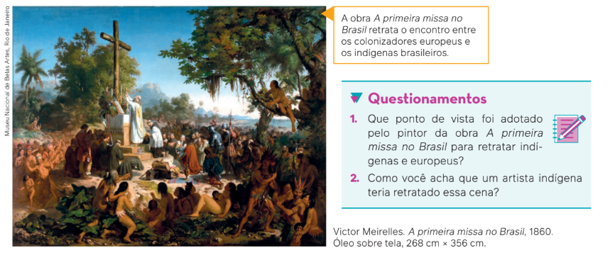
As relações interculturais
Relação intercultural significa valorização, interação e comunicação recíprocas entre os diferentes sujeitos e grupos culturais. A interculturalidade é uma ideia que tem por base o reconhecimento do direito à diferença e a luta contra todas as formas de discriminação e desigualdade social. Ela busca promover o diálogo e relações igualitárias entre pessoas e grupos que pertencem a culturas diferentes, sem perder de vista a crítica às relações desiguais de poder.
Nas palavras de Catherine Walsh (1952-), pedagoga estadunidense e professora aposentada da Universidade Andina Simón Bolívar, no Equador, a interculturalidade é:
[...] um processo dinâmico e permanente de relação, comunicação e aprendizagem entre culturas em condições de respeito, legitimidade mútua, simetria e igualdade. Um intercâmbio que se constrói entre pessoas, conhecimentos, saberes e práticas culturalmente diferentes, buscando desenvolver um novo sentido entre elas na sua diferença. Um espaço de negociação e de tradução onde as desigualdades sociais, econômicas e políticas, e as relações e os conflitos de poder da sociedade não são mantidos ocultos e sim reconhecidos e confrontados. Uma tarefa social e política que interpela o conjunto da sociedade, que parte de práticas e ações sociais concretas e conscientes e tenta criar modos de responsabilidade e solidariedade. Uma meta a alcançar.
WALSH, C. La educación intercultural en la educación. Peru: Ministerio de Educación, 2001. Mimeografado.
A interculturalidade, portanto, pode ser considerada o oposto do etnocentrismo.
Na sociedade brasileira, ainda há muita dificuldade em reconhecer e promover o diálogo e a troca entre diferen-
tes grupos, e ainda ocorrem muitos casos de violência contra homossexuais, mulheres e negros, além de atitudes e
comportamentos de rejeição a pessoas com deficiência, por exemplo. O simples fato de ser diferente, sob diversos
aspectos, dificulta o acesso de certos indivíduos a bens, oportunidades de trabalho e até mesmo certos espaços.
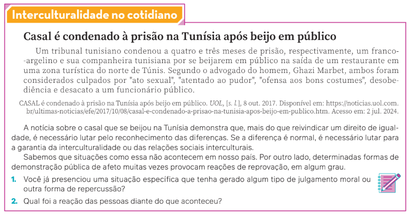
Outro conceito que se relaciona com o etnocentrismo é o relativismo cultural. Relativismo é uma noção
filosófica elaborada no fim do século XIX. Na Antropologia, o termo se refere à ideia de que cada cultura tem a própria
razão de ser; portanto, tem uma explicação própria. Assim, se o etnocentrismo nos remete à ideia de julgamento e
hierarquia entre as culturas, o relativismo cultural considera tradições e costumes obras de uma cultura específica.
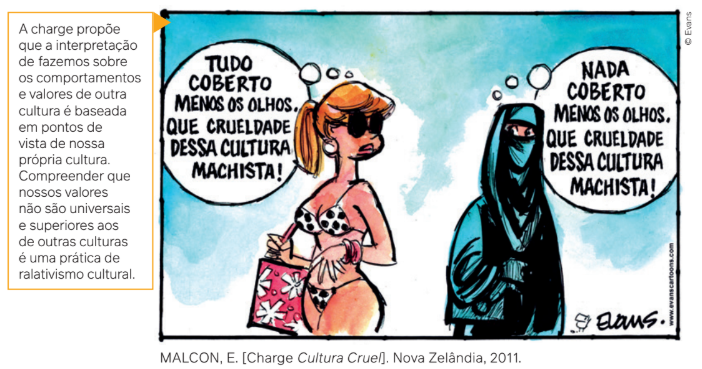
O que diferencia o ser humano de outros seres é sua capacidade de responder aos diversos desafios que a
realidade impõe. No entanto, essa preocupação com a realidade e esse agir no mundo não se dão de maneira isolada,
e sim nas relações entre os indivíduos, construindo novas realidades, culturas e histórias.
E essas culturas e histórias sempre se relacionam entre si. Por isso, as diferenças sociais e culturais, que são os
aspectos mais humanos que existem entre as pessoas e as sociedades, podem se expressar por meio do etnocentrismo ou das relações interculturais.